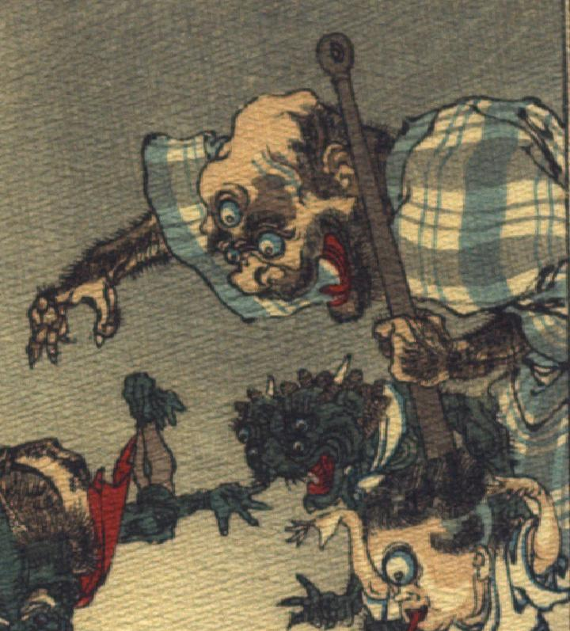

三つ目の入道。頭頂部は禿げて、歪み、こめかみ辺りから青筋が立っている。目玉は丸く、白目が青く光っており、額の真ん中に3つめの目玉がついている。眉毛がぼうぼうと生え、大きな鼻は横に潰れている。口の周りにぼうぼうとひげを生やしている。脅かすように、口を大きく開いている。格子柄の着物をまとい、腕は毛むくじゃらである。左手に金棒を持ち、右手は下のものを掴もうとするかのように伸ばされている。
出典：親書誌：U426_nichibunken_0109：Le moineau qui a la langue coupée／日付：2006／資源識別子：U426_nichibunken_0109_0008_0004
Copyright (c)2010- International Research Center for Japanese Studies, Kyoto, Japan. All rights reserved.